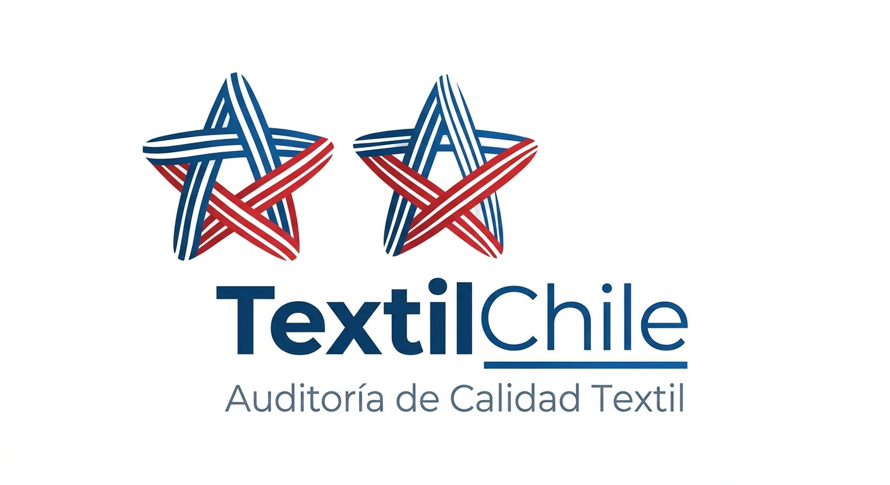

TextilChile
Inicio
Ayuda
Mi Perfil
Cerrar sesión
Bienvenido a TextilChile
Nos dedicamos a las Auditorías textiles en márgenes de calidad y trazabilidad.
Producto:
Seleccione un producto
PR001 - Tela de algodón 100%
PR003 - Polera básica
Estado Actual:
Gramaje (Rango: 150 - 200 g/m²)
Iniciar Inspección